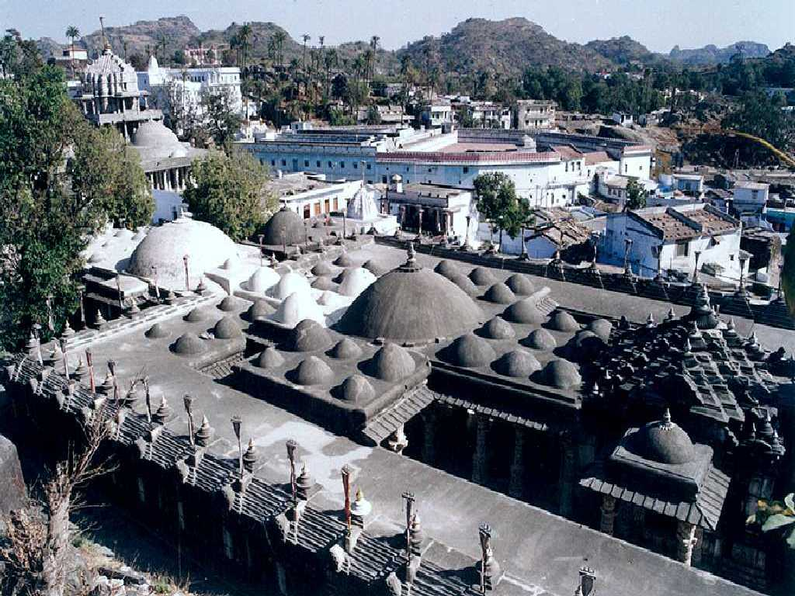
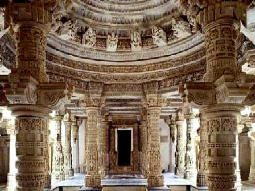
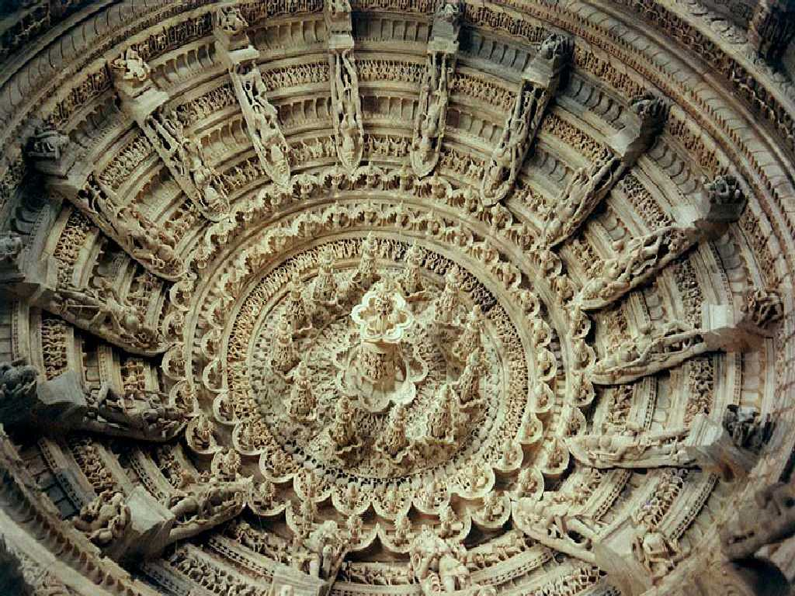
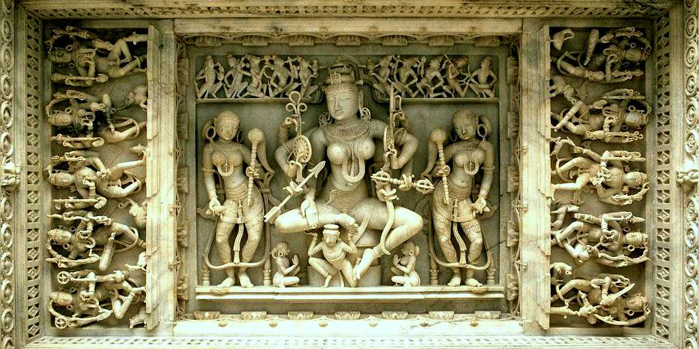
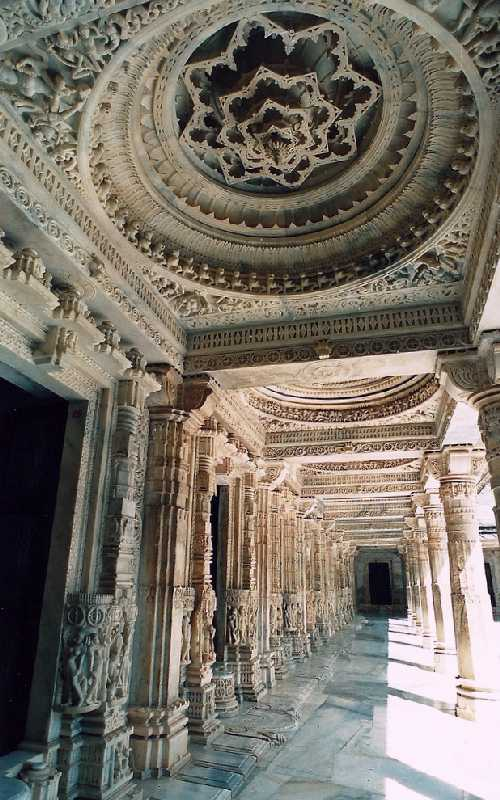
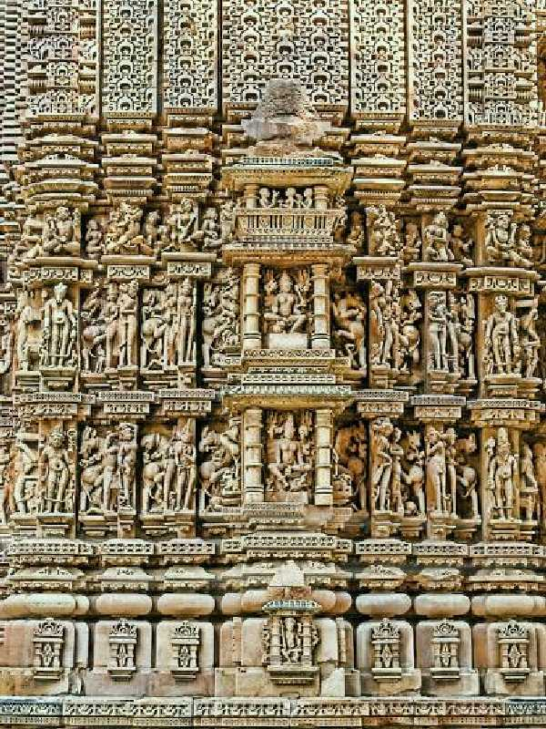
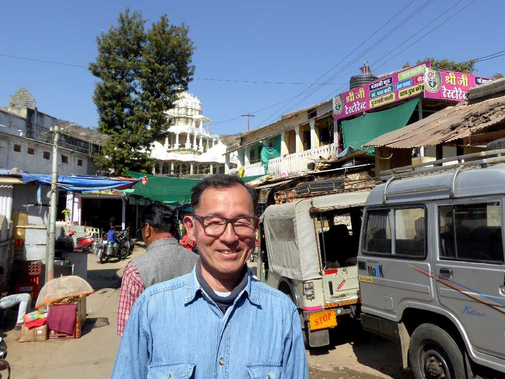
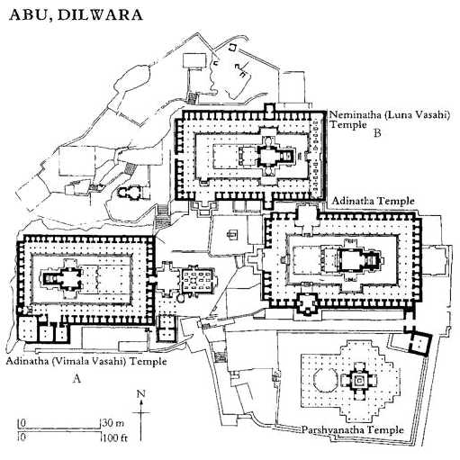

Dilwara Jain Temples Abu
ジャイナ教で最も美しい寺院と云われる１１世紀から１３世紀に創られた５つの寺院からなるディルワラ寺院群

Altar
死ぬまでに一度は観ておきたいと思うほど美しい大理石彫刻

Ceiling
天井の大理石彫刻

Chakreshwari Devi Statue
ジャイナ教の女神チャクレーシュヴァリーの大理石彫刻
 
Corridor
大理石の回廊と彫刻群の美しさに感激

January 27 2018 Dilwara Jain Temples
